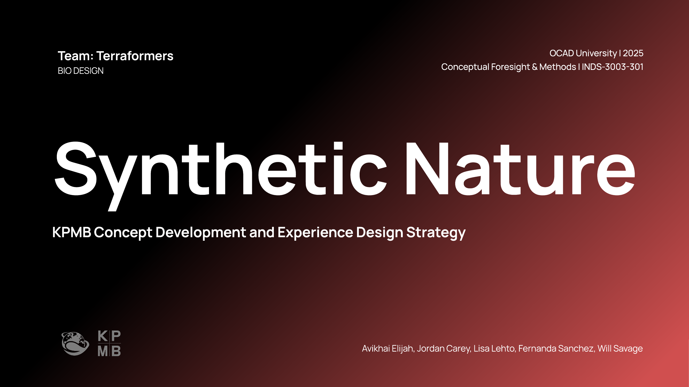
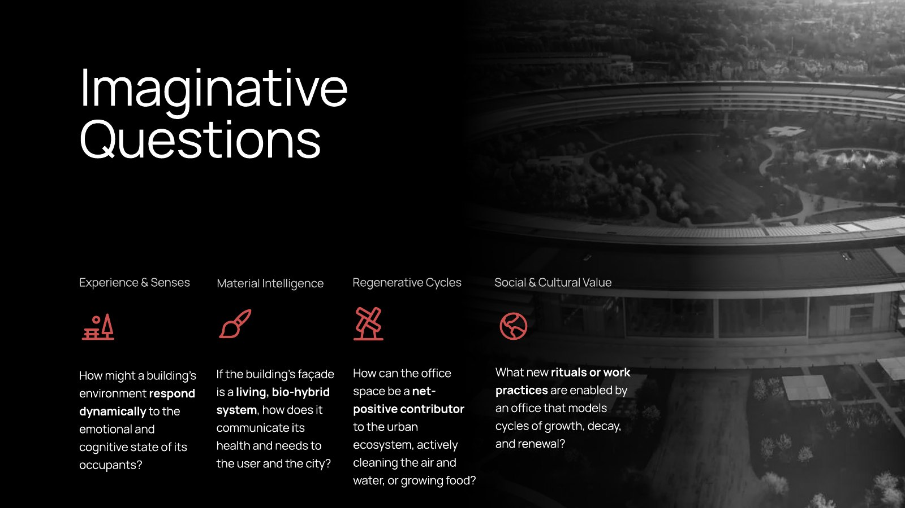
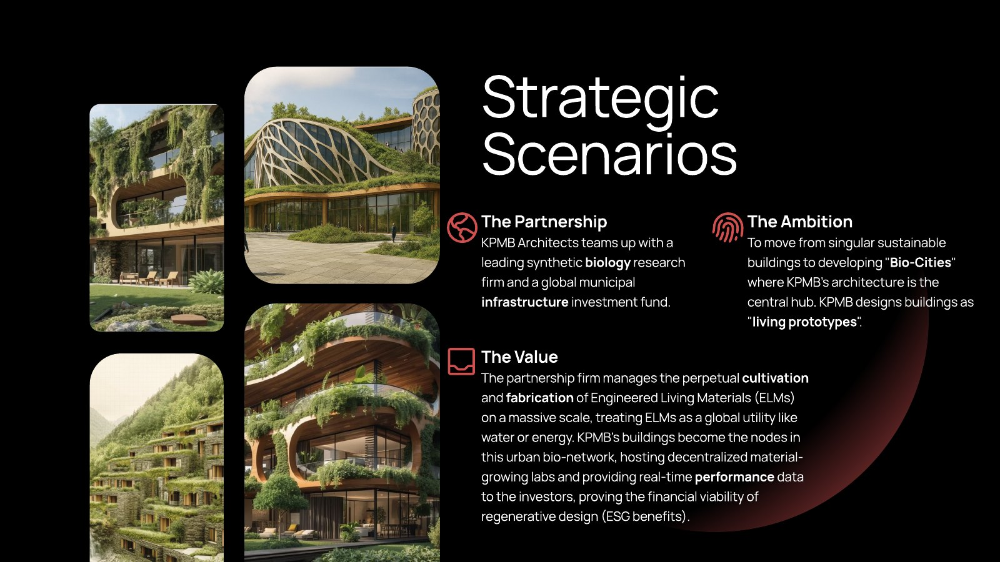
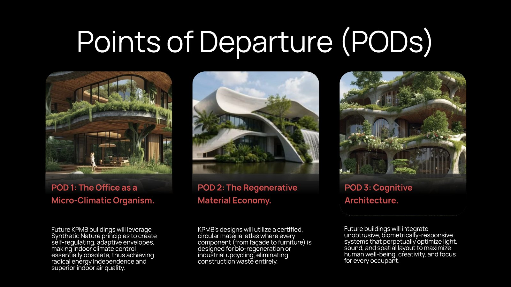
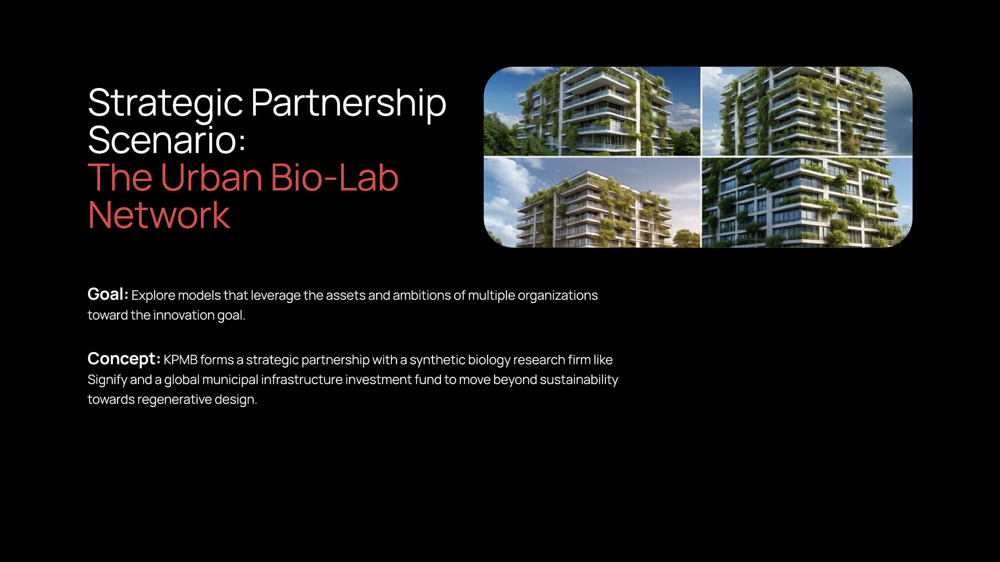
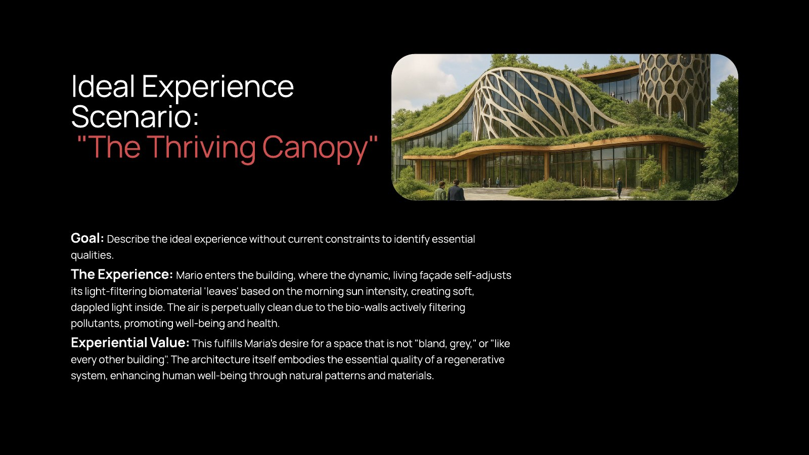
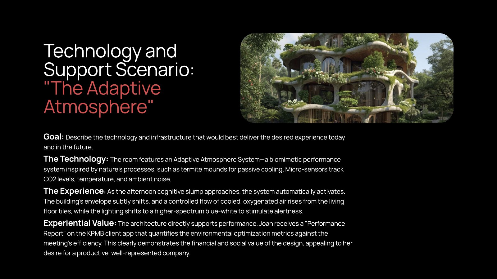
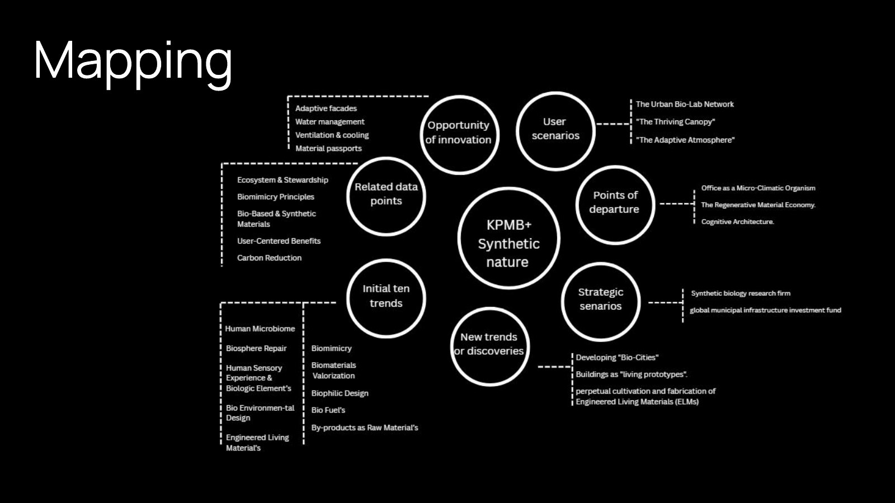

A strategic foresight deck that repositions the architecture firm KPMB around biomimicry and engineered living materials, through scenarios, points of departure and user stories.

Project deck cover. Building and portrait images in this deck are AI-assisted concept visualizations.
The project asks where an architecture firm goes after sustainability. We framed it through four imaginative questions, covering experience and senses, material intelligence, regenerative cycles, and social and cultural value. One of them: "If the building's façade is a living, bio-hybrid system, how does it communicate its health and needs to the user and the city?"


I researched and gathered information on the selected trends, evaluated and compared trend and signal pairings for how well they worked, and followed related news and developments. That fed the strategic scenario: KPMB partnering with a synthetic biology research firm and a municipal infrastructure investment fund, moving from single sustainable buildings to buildings designed as "living prototypes."

I developed design directions for the Synthetic Nature trend. The deck sets out three points of departure: the office as a micro-climatic organism, a regenerative material economy, and cognitive architecture that adjusts light, sound and layout to the people inside.
We wrote three scenarios, each with a different job. The Urban Bio-Lab Network is the strategic partnership scenario. The Thriving Canopy describes the ideal experience without current constraints. The Adaptive Atmosphere describes the technology and infrastructure that would deliver it. Three user stories then test the scenarios against a research director, a facilities director and a company CEO.




This is a vision and strategy deck, not a building. Its output is a direction a firm could choose to pursue, with the partnerships, experiences and technology that direction would need.
My specific contributions: I researched and gathered information on the selected trends, evaluated and compared trend and signal pairings, researched related news and developments, developed design directions for the Synthetic Nature trend, evaluated potential stakeholders and pairings, and contributed to the final design direction.
AI disclosure: the building and portrait images in this deck are AI-assisted concept visualizations, not photographs or original renders.